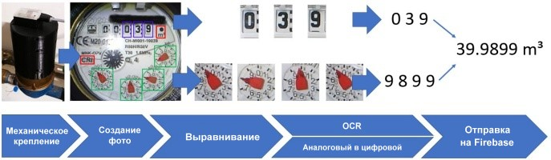
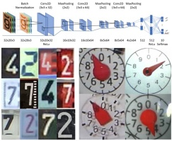

Вас приветствует первоначальное окно настройки считывания показаний счётчика на ESP32-CAM!

После установки прошивки вам нужно настроить работу вашей платы ESP32-CAM. Процесс настройки состоит из 5 этапов. На последнем этапе первоначальная настройка будет отключена и при перезагрузке плата ESP32-CAM запустится в нормальном режиме.
Вы можете перемещаться между этапами настройки при помощи кнопок "Назад" и "Далее". Не забывайте при переходе на следующий этап сохранять все изменения при помощи кнопки "Сохранить всё в Config.ini".
Это краткое описание всех 5 этапов:
- Создание эталонного изображения
Создание и настройка фотографии вашего счётчика, которая будет использоваться как база на следующих этапах.
- Определение двух элементов выравнивания
Это нужно для выравнивания фотографий платы ESP32-CAM и определения абсолютной позиции.
- Определение отдельных цифр на фотографии
Это нужно для определения областей интереса (ROI) в которых находятся цифры, которые следует распознать.
- Определение аналоговых счётчиков на фотографии
Это нужно для определения областей интереса (ROI) в которых находятся аналоговые счётчики, показания с которых следует распознать.
- Глобальные настройки
Здесь в большинстве настроек можно оставить значения по умолчанию. Нужно указать только почту и пароль вашего пользователя в моём приложении.
Приятного использования!